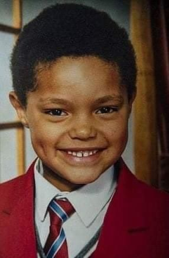

April 25,2025
Invisible lines
The unseen but deeply felt barriers that defined Noah's life.Lines drawn by
race,language,class and history.
April 24,2025
Between Illegality and Innocence
This Explores Trevor's existence as a child born
to an African motherand a German father
under
the apertheid laws-
where love itself was a crime.
April 23,2025
Raised by a Revolution

Focuses on Patricia,Trevor's fearless mother,
whose strength,wit,faith
guided him through
chaos and contradictions.
April 22,2025
Laughter as a Lifeline

Reveals how comedy became more than
entertainment-a defense,a weapon,and
a way to process trauma and absurdity
April 21,2025
The In-between Skin

Unpacks Trevor's struggle with racial identity,
navigating spaces
where he was too "black" for some,"too white"for
others and often inivisible.